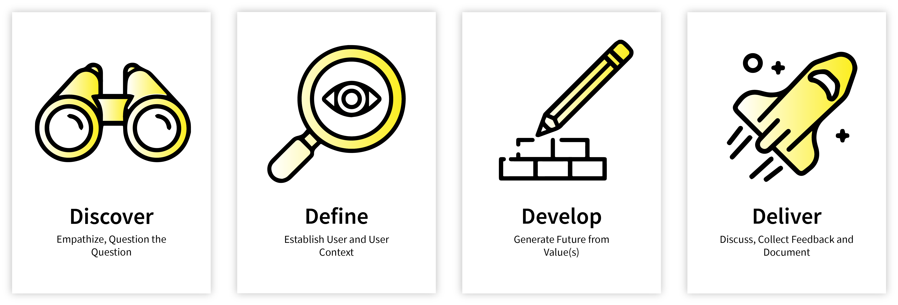
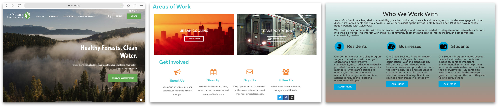

Overview
Project Brief
Climate Action Santa Monica (CASM) is a locally based, grassroots organization dedicated to empowering the community into action to mitigate and adapt to cataclysmic effects of climate change. The website serves as the face for the non-profit and had not been updated since its creation.
The Problem
Website is missing features and design that allow visitors to easily donate and learn more about CASM.
The Goal
Objective is to have the website speak about CASM’s mission and be a portal for people to engage with the nonprofit by making it easier to donate and provide resources to the community.
Responsibilities
UX Research, UI Design, Prototyping, Usability Testing
The Process
Discover
Creative Brief & Stakeholder Research
CASM asked us to:
- Help people find out what they do
- Engage ages 18-35 audience
- Show people that they can make a difference
- Serve as a bridge between city government and local people
- Inspire people with personal sustainability
Heuristic Review
Summary & Strengths:
- Clean, uncluttered, with simple navigation
- Visual images are authentic to the brand
- Website loads quickly, under 1 second
- Mobile site is better than the desktop version. The layout of the images and text are well placed and the newsfeed is cleanly designed
Opportunities for Improvement:
- General scarcity of content & recent activity
- Vagueness: mission, impact, activities, INVOLVEMENT. Where are more impact metrics and actions to take?
- Some navigation issues - esp. volunteer
- Donation form - important! - unclear in clickability; lost in the process of going to external site
Competitive Analysis
Summary & Strengths:
- Easily Scannable
- Concrete focus area, mission, impact broken down into concise “bite sized” pieces
- Intuitive navigation with clearly clickable buttons & links
- Bullet points are properly used and paragraphs are short and concise.
- Strong, professional background images
- Clear categories for how to support, learn more, get personally involved
Opportunities for Improvement:
- Some legibility issues (text/links overlaid on images)
- Some lack of site navigation options (headers/footers, search bars)